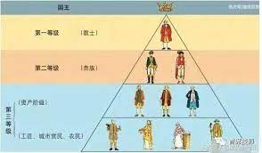
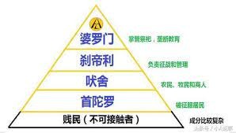

caste system
-

What is India's caste system?
The system which divides Hindus into rigid hierarchical groups based on their karma (work) and dharma (the Hindi word for religion, but here it means duty) is generally accepted to be more than 3,000 years old.
At the top of the hierarchy were the Brahmins who were mainly teachers and intellectuals and are believed to have come from Brahma's head. Then came the Kshatriyas, or the warriors and rulers, supposedly from his arms. The third slot went to the Vaishyas, or the traders, who were created from his thighs. At the bottom of the heap were the Shudras, who came from Brahma's feet and did all the menial jobs.
The main castes were further divided into about 3,000 castes and 25,000 sub-castes, each based on their specific occupation.
Outside of this Hindu caste system were the achhoots - the Dalits or the untouchables.
For centuries, caste has dictated almost every aspect of Hindu religious and social life, with each group occupying a specific place in this complex hierarchy.
Rural communities have long been arranged on the basis of castes - the upper and lower castes almost always lived in segregated colonies, the water wells were not shared, Brahmins would not accept food or drink from the Shudras, and one could marry only within one's caste.
The system bestowed many privileges on the upper castes while sanctioning repression of the lower castes by privileged groups.
Often criticised for being unjust and regressive, it remained virtually unchanged for centuries, trapping people into fixed social orders from which it was impossible to escape.
Despite the obstacles, however, some Dalits and other low-caste Indians, such as BR Ambedkar who authored the Indian constitution, and KR Narayanan who became the nation's first Dalit president, have risen to hold prestigious positions in the country.
Historians, though, say that until the 18th Century, the formal distinctions of caste were of limited importance to Indians, social identities were much more flexible and people could move easily from one caste to another.
New research shows that hard boundaries were set by British colonial rulers who made caste India's defining social feature when they used censuses to simplify the system, primarily to create a single society with a common law that could be easily governed.
Read More -

The system of legal
Independent India's constitution banned discrimination on the basis of caste, and, in an attempt to correct historical injustices and provide a level playing field to the traditionally disadvantaged, the authorities announced quotas in government jobs and educational institutions for scheduled castes and tribes, the lowest in the caste hierarchy, in 1950.
In 1989, quotas were extended to include a grouping called the OBCs (Other Backward Classes) which fall between the traditional upper castes and the lowest.
In recent decades, with the spread of secular education and growing urbanisation, the influence of caste has somewhat declined, especially in cities where different castes live side-by-side and inter-caste marriages are becoming more common.
In certain southern states and in the northern state of Bihar, many people began using just one name after social reform movements. Despite the changes though, caste identities remain strong, and last names are almost always indications of what caste a person belongs to.
Read More
© BBC | Source of information